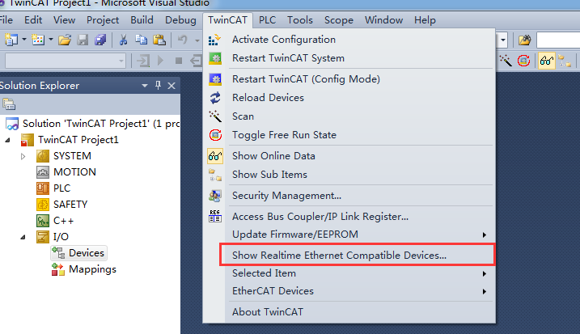
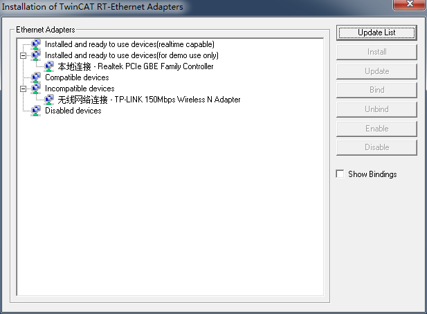
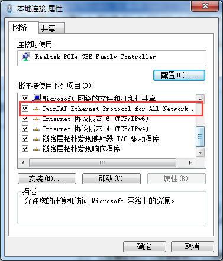
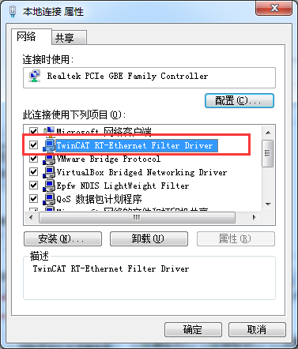
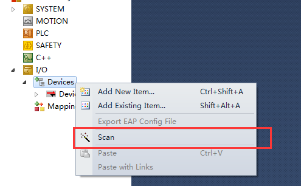
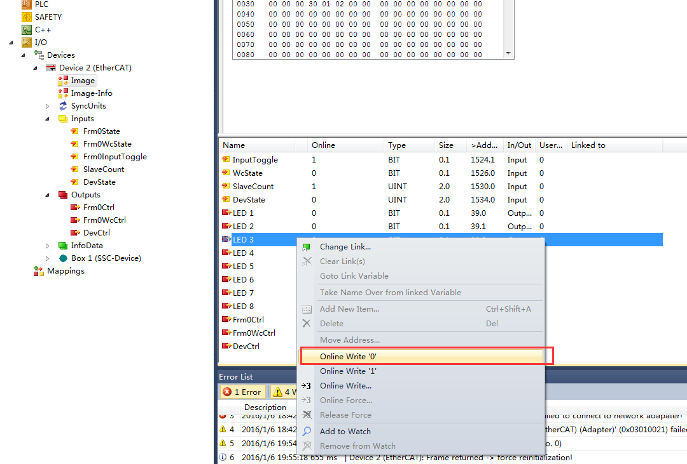
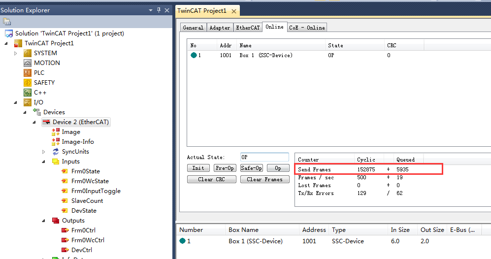
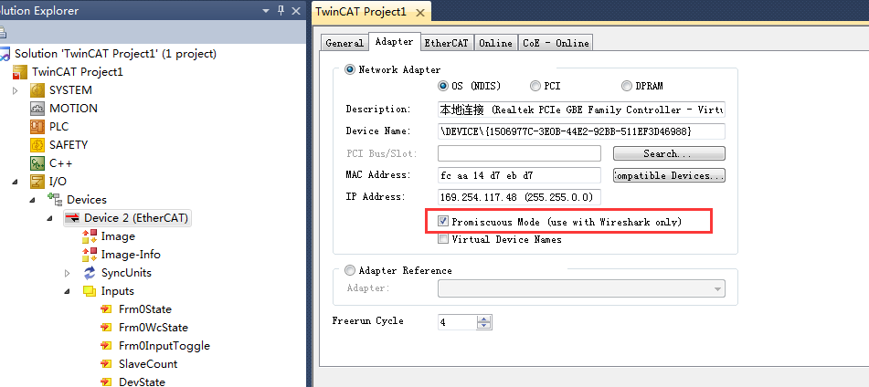
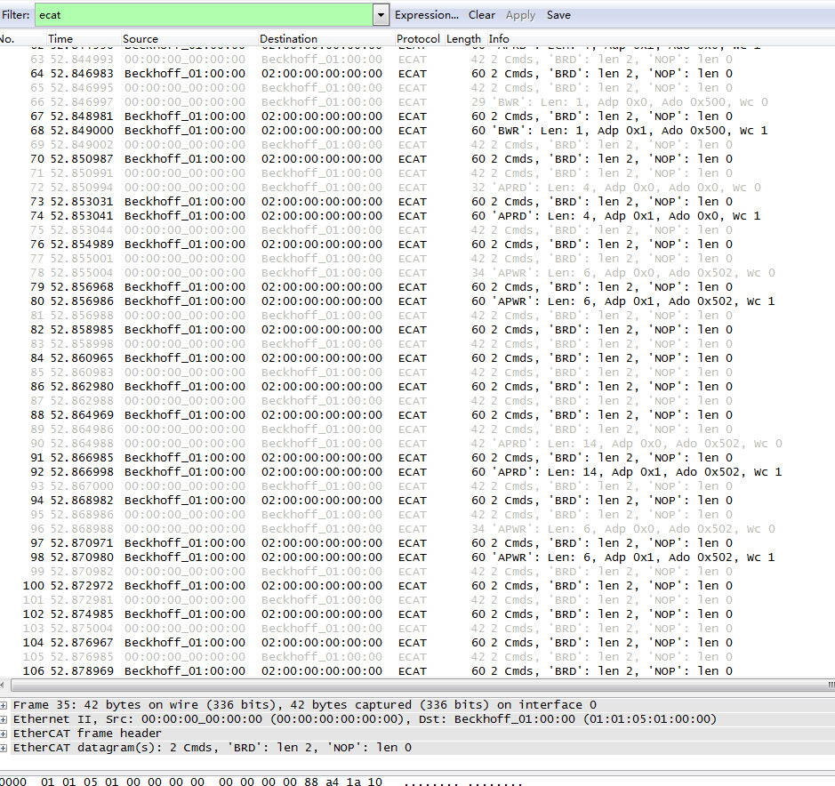

环境
网络上很多都是使用的 TwinCAT 2 和 WireShark 1.4 来建立主站程序并捕捉 EtherCAT 数据，这里做个新版本的教程，新的软件较旧软件使用方便。
软件
硬件
PC利用 TwinCAT 作为主站，从站采用的是基于 ET1100 的从站开发板。
配置
1. 安装驱动
安装好 TwinCAT 之后需要安装相应网卡的 RT-EtherCAT 适配器的驱动。
打开 TwinCAT 的 Show Realtime Ethernet Compatible Devices 对话框，如下图：

接着点击下面的设备列表中的设备，再右边点击 install 安装驱动。安装完会出现在 installed and ready to use devices 下面，表示可以使用了，如下图：

安装完驱动后会在本地连接的属性列表中多出两个项目，如下图：
 
2. 建立项目并捕捉数据
新建 TwinCAT XAE Project 项目，建立完成之后连接 EtherCAT 从站，在工程 I/O 下面 Devices 处扫描设备，如下图：

扫描到之后我们可以对设备进行操作，如下图可以控制 LED:

并且我们能在设备的在线选项卡中看到收发出去的帧数，如下图：

但是到这一步为止我们用 WireShark 并不能捕获到 EtherCAT 的数据帧。需要能捕获到，我们必须打开设备的 Promiscuous Mode，Promiscuous Mode 是什么意思呢？官方解释为：
Promiscuous Mode (use with Netmon only)
If this control box is activated, the TwinCAT Ethernet telegrams are also transferred to Windows and can therefore be analyzed with a network monitor (e.g. Etherreal or MS network monitor).
所以我们在适配器选项卡中打开这个模式，如下图：

这个时候再用 WireShark 捕捉，就能得抓到数据了。

大功告成！